Boulder Brewery Bike Tours
Boulder, CO has a platinum status rating for bike infrastructure in America. This app allows you to pick popular breweries in Boulder, CO and map a bike route between them using the multipurpose paths and safe bike routes through town.
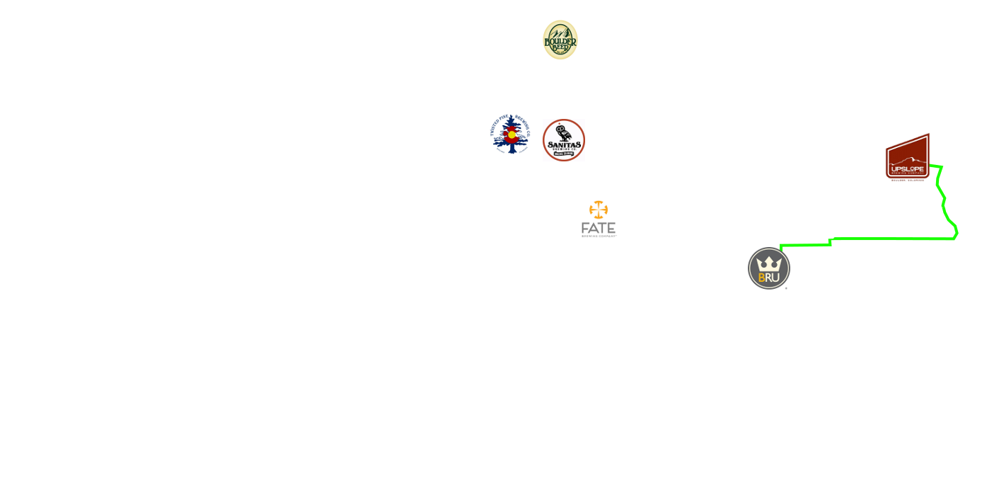
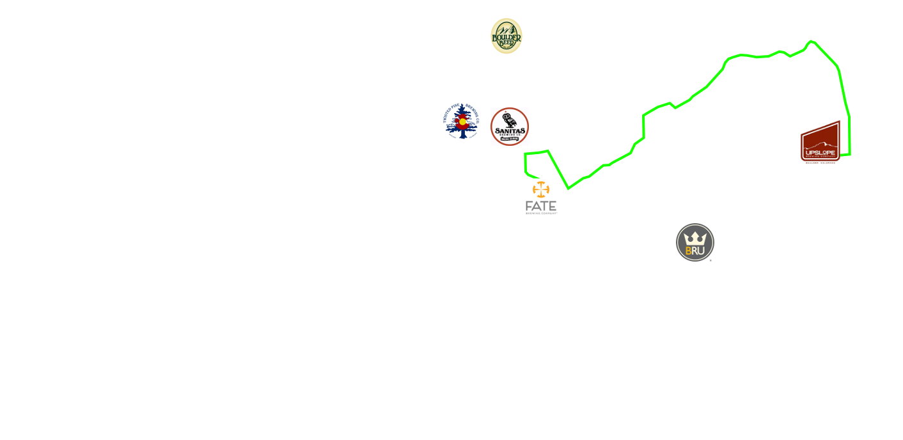
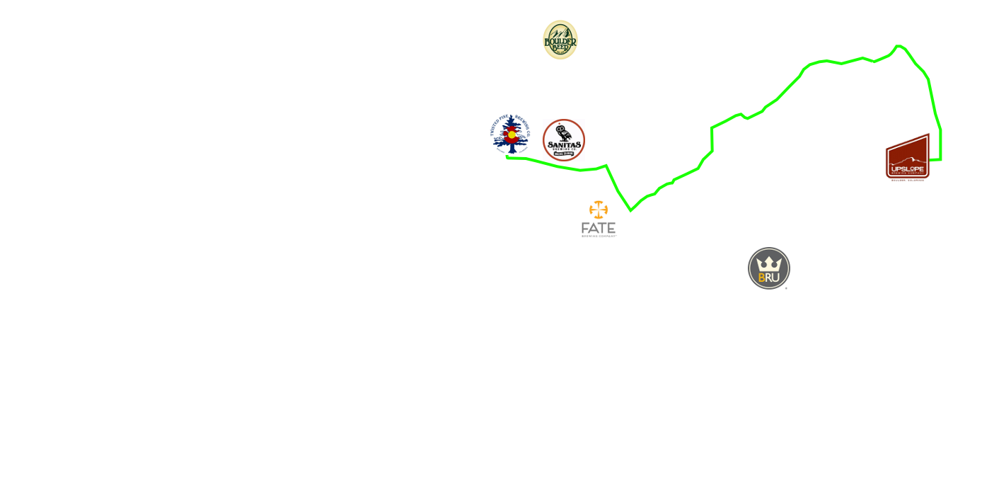
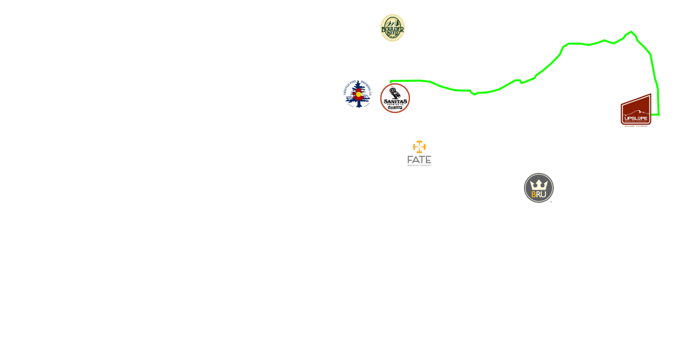
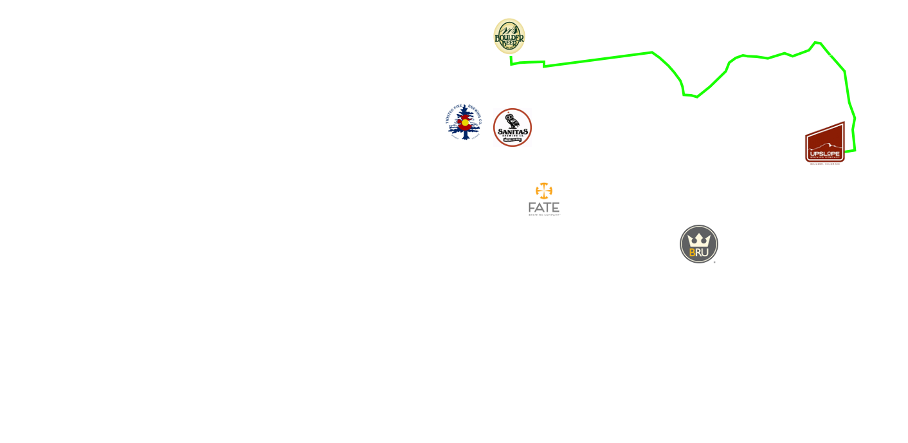
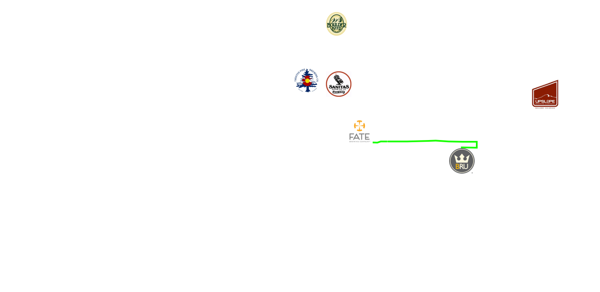
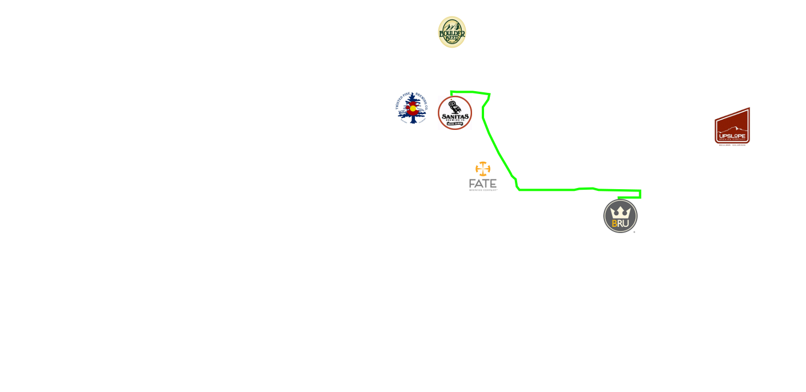
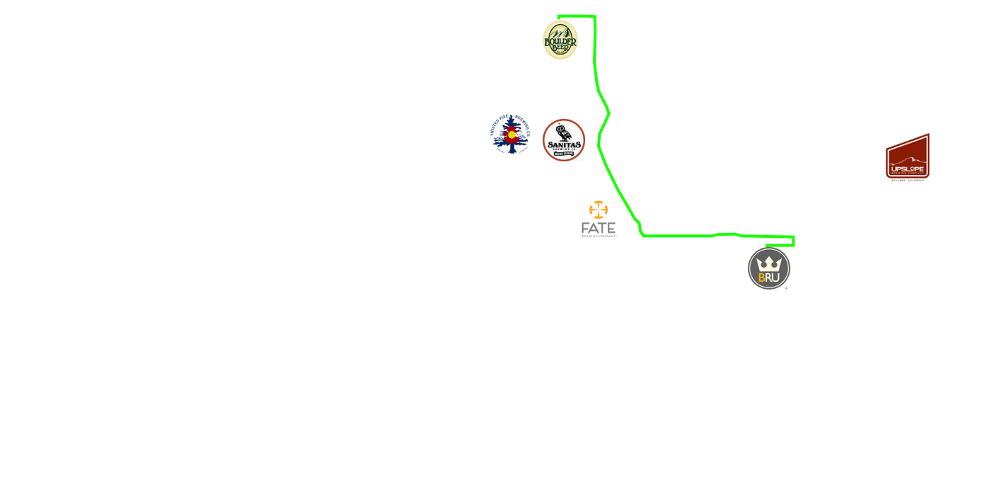
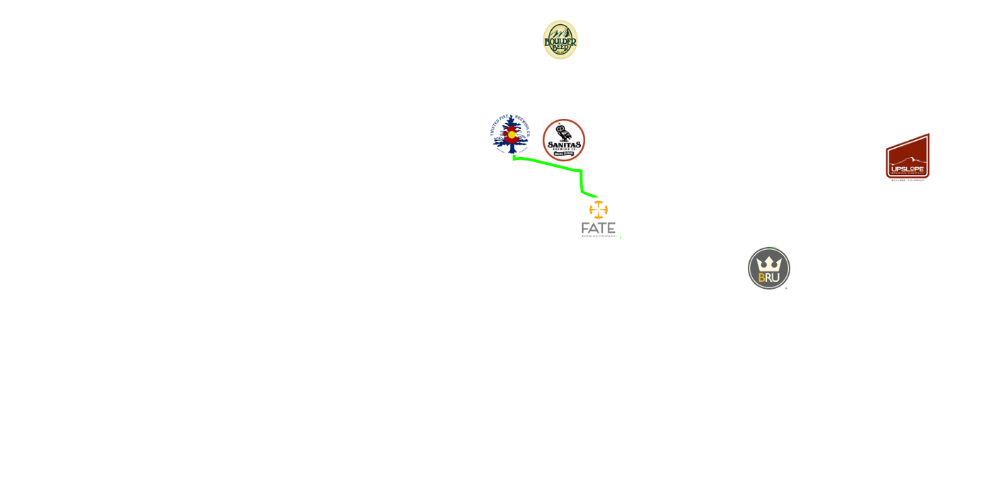
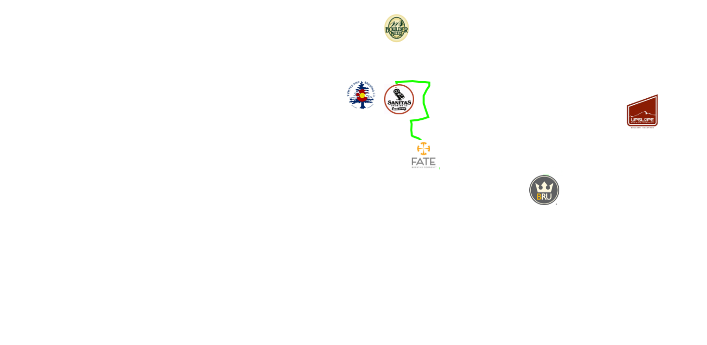
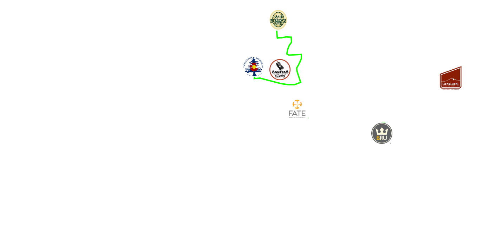
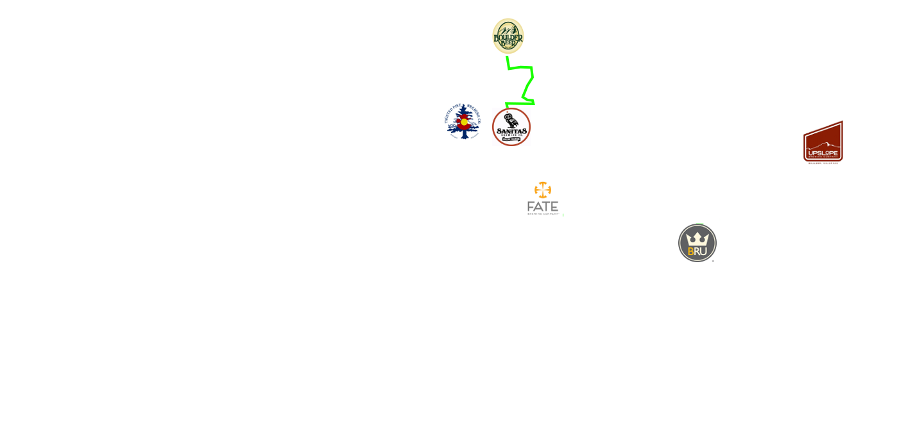
Upslope to BRU
1. Bike behind the brewery and connect with the South Boulder Creek Path. Head South.
2. Take a right onto the multipurpose path on Arapahoe Ave.
3. Cross to the south side of the street at 55th and continue heading down Arapahoe Ave.
4. Turn left onto Patton Dr. and BRU will be directly on your right at the far end of the strip building.
Upslope to FATE
1. Bike behind the brewery and connect with the South Boulder Creek Path. Head North.
2. Take a left onto the Bear Canyon Creek Path and diverge from Pearl Pkwy.
3. Turn right and follow Foothills Pkwy.
4. Take the right side of the fork that will drop you down to Walnut St.
5. Turn left onto Walnut St.
6. Turn left onto 38th St. and FATE will be on your left before Arapahoe Ave.
Upslope to Twisted Pine
1. Bike behind the brewery and connect with the South Boulder Creek Path. Head North.
2. Take a left onto the Bear Canyon Creek Path and diverge from Pearl Pkwy.
3. Turn right and follow Foothills Pkwy.
4. Take the right side of the fork that will drop you down to Walnut St.
5. Turn left onto Walnut St. and Twisted Pine will be on your right before 30th St.
Upslope to Sanitas
1. Bike behind the brewery and connect with the South Boulder Creek Path. Head North.
2. Take a left onto the Bear Canyon Creek Path and diverge from Pearl Pkwy.
3. Take a left on Frontier Ave. and Sanitas will be on your right.
Upslope to Boulder Beer
1. Bike behind the brewery and connect with the South Boulder Creek Path. Head North.
2. Take a left onto the Bear Canyon Creek Path and diverge from Pearl Pkwy.
3. Turn right at the first fork and go under Pearl Pkwy.
4. Take a left at the first fork and cross under Foothills Pkwy.
5. Turn left right after the underpass and make a hard right just after the bridge onto Wilderness Pl.
6. Follow Wilderness Pl. around to the right and Boulder Beer will be directly ahead of you.
BRU to FATE
1. Turn right on Arapahoe Ave. and cross to the other side of Arapahoe at Conestoga.
2. Follow the bike path parallel to Arapahoe Ave.
3. There will be a dirt path off to the right that takes you directly behind FATE.
BRU to Twisted Pine
1. Turn right on Arapahoe Ave. and cross to the other side of Arapahoe at Conestoga.
2. Follow the bike path parallel to Arapahoe Ave. until Foothills Pkwy.
3. Take a right onto the bike path that follows Foothills.
4. Take the first fork down to Walnut St. and turn left.
5. Twisted Pine will be on your right before 30th St.
BRU to Sanitas
1. Turn right on Arapahoe Ave. and cross to the other side of Arapahoe at Conestoga.
2. Follow the bike path parallel to Arapahoe Ave. until Foothills Pkwy.
3. Take a right onto the bike path that follows Foothills.
4. Take a left onto Pearl Pkwy.
5. Take a left onto Frontier Ave. and Sanitas will be on your right.
BRU to Boulder Beer
1. Turn right on Arapahoe Ave. and cross to the other side of Arapahoe at Conestoga.
2. Follow the bike path parallel to Arapahoe Ave. until Foothills Pkwy.
3. Take a right onto the bike path that follows Foothills.
4. Take a left on Valmont St.
5. Take a left on Wilderness Pl. and Boulder Beer will be directly ahead of you.
FATE to Twisted Pine
1. Head North on 38th St.
2. Turn left on Walnut St. and the brewery will be on your right.
FATE to Sanitas
1. Head North on 38th St.
2. Pass under the bridge and take the bike ramp on the right that will take you up to Foothills Pkwy.
3. Turn right onto Foothills Pkwy.
4. Turn left onto the Pearl Pkwy. multipurpose path.
5. Turn left onto Frontier Ave. and Sanitas will be at the east end of the building.
FATE and Boulder Beer
1. Head North on 38th St.
2. Pass under the bridge and take the bike ramp on the right that will take you up to Foothills Pkwy. Turn right on Foothills.
3. Cross to the opposite side of the street at Pearl Pkwy. and turn right again on Foothills Pkwy.
4. Turn left onto the bike path and look for a mural on your right.
5. Bike up the hill near the mural and Boulder Beer will be straight ahead of you in the loop.
Twisted Pine to Sanitas
1. Turn left on Walnut St.
2. Pass under the bridge and take the bike ramp on the right that will take you up to Foothills Pkwy. Turn right on Foothills.
3. Turn left on the multipurpose path on Pearl Pkwy.
4. Turn left on Frontier Ave. and Sanitas will be at the end of the building.
Twisted Pine to Boulder Beer
1. Turn left onto Walnut St.
2. Pass under the bridge and take the bike ramp on the right that will take you up to Foothills Pkwy. Turn right on Foothills.
3. Cross to the opposite side of the street at Pearl Pkwy. and turn right again on Foothills Pkwy.
4. Turn left onto the bike path and look for a mural on your right.
5. Bike up the hill near the mural and Boulder Beer will be straight ahead of you in the loop.
Sanitas to Boulder Beer
1. Head down Frontier Ave. towards Pearl Pkwy.
2. Turn right on Pearl Pkwy. and then cross to the left side of the street at Foothills Pkwy. and continue on.
3. Turn left onto the first bike path and look for a mural on your right.
4. Bike up the hill near the mural and Boulder Beer will be straight ahead of you in the loop.
Print Directions
Reset
The creator of this site assumes no responsibility for any damages that may occur from the use of this application. © Seth Muller